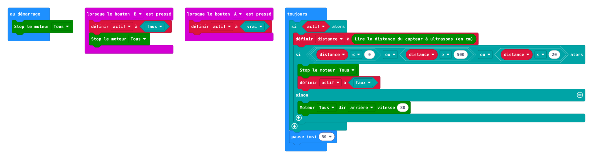
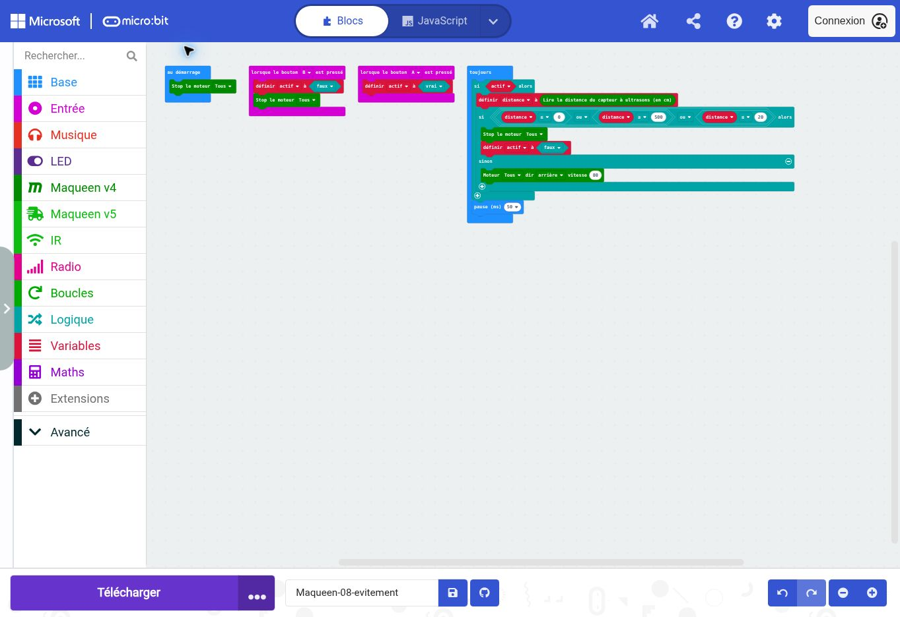

1
maqueen.motorStop(maqueen.Motors.All)
Arrêter les deux moteurs. Ce bloc termine une action ou impose l’arrêt quand une condition le demande. Une pause seule n’arrête pas les roues.
Comment transformer une mesure en décision répétée ?
Comment transformer une mesure en décision répétée ?
Vous préparez une activité de technologie. Avant de la proposer à une classe, vous devez comprendre le programme, prévoir son comportement et recueillir une preuve de fonctionnement.
Au démarrage, rester arrêté. A autorise le déplacement ; B désactive et arrête. Toutes les 50 ms, si le robot est actif : Lire la distance. Si la valeur est invalide ou inférieure ou égale à 20 cm, arrêter et désactiver. Sinon avancer.
La capture montre les blocs convertis par MakeCode. Les fichiers HEX sont compilés et contiennent le projet réimportable. La matrice du simulateur ne constitue pas un essai des moteurs ou des capteurs réels.


Les lignes de code ci-dessous servent de repères exacts aux blocs de la capture. Vous pouvez travailler exclusivement dans l’onglet Blocs après avoir importé le HEX.
maqueen.motorStop(maqueen.Motors.All)
Arrêter les deux moteurs. Ce bloc termine une action ou impose l’arrêt quand une condition le demande. Une pause seule n’arrête pas les roues.
let actif = false
Mémoriser la valeur de droite dans « actif ». Vrai autorise le pilotage ; faux le désactive.
let distance = 0
Mémoriser la valeur de droite dans « distance ». Un nom permet de réutiliser ou de modifier ce réglage sans répéter la valeur dans plusieurs blocs.
input.onButtonPressed(Button.A, function () {
Événement bouton A : déclencher la séquence ou activer le robot. Le contenu accroché sous cet événement s’exécute quand A est pressé.
actif = true
Mémoriser la valeur de droite dans « actif ». Vrai autorise le pilotage ; faux le désactive.
input.onButtonPressed(Button.B, function () {
Événement bouton B : désactiver et arrêter, ou régler la durée selon la fiche.
actif = false
Mémoriser la valeur de droite dans « actif ». Vrai autorise le pilotage ; faux le désactive.
maqueen.motorStop(maqueen.Motors.All)
Arrêter les deux moteurs. Ce bloc termine une action ou impose l’arrêt quand une condition le demande. Une pause seule n’arrête pas les roues.
basic.forever(function () {
Répéter sans fin le contenu de cette boucle. Les conditions seront réévaluées à chaque passage ; ce n’est pas un test réalisé une seule fois.
if (actif) {
Tester la condition écrite entre parenthèses. Le contenu de cette branche s’exécute seulement si elle est vraie. « && » signifie ET, « || » signifie OU. Dans une chaîne si / sinon si, seule la première branche vraie est exécutée. Les comparaisons ≤ et ≥ incluent la valeur du seuil.
distance = maqueen.Ultrasonic()
Lire le capteur ultrasonore en centimètres et mémoriser le résultat dans distance. Une valeur 500 peut signaler un écho absent. Lire une seule fois évite de comparer des mesures différentes dans une même décision.
if (distance <= 0 || distance >= 500 || distance <= 20) {
Tester la condition écrite entre parenthèses. Le contenu de cette branche s’exécute seulement si elle est vraie. « && » signifie ET, « || » signifie OU. Dans une chaîne si / sinon si, seule la première branche vraie est exécutée. Les comparaisons ≤ et ≥ incluent la valeur du seuil.
maqueen.motorStop(maqueen.Motors.All)
Arrêter les deux moteurs. Ce bloc termine une action ou impose l’arrêt quand une condition le demande. Une pause seule n’arrête pas les roues.
actif = false
Mémoriser la valeur de droite dans « actif ». Vrai autorise le pilotage ; faux le désactive.
} else {
Exécuter cette branche si les conditions précédentes sont fausses. Elle complète la table de décision et évite de garder une commande ancienne non voulue.
maqueen.motorRun(maqueen.Motors.All, maqueen.Dir.CW, 80)
Commander les deux moteurs vers l’avant (CW), avec la commande 80. Cette valeur est comprise entre 0 et 255 ; elle n’est pas une vitesse en cm/s. La commande continue après ce bloc jusqu’à une nouvelle commande ou un arrêt.
basic.pause(50)
Attendre 50 millisecondes. Les moteurs gardent leur dernière commande pendant cette attente. 1000 ms correspondent à 1 s. Le temps réel du cycle inclut aussi les mesures et les autres instructions.
Pour chaque essai : noter la prévision, le réglage, l’observation et l’écart. Ne modifier qu’un paramètre à la fois.
Comparer deux seuils, 15 et 25 cm, à vitesse inchangée.
Écrivez votre prévision avant de lancer. Après l’essai, expliquez l’écart avec les commandes et les informations disponibles.
Faire expliciter les conditions et la variable booléenne. Le robot ne repart pas tout seul après l’arrêt : il faut A. Demander aux collègues de justifier cette décision.
Besoin d’appui : fournir la table de décision ou l’algorithme, puis demander d’expliquer une commande avant le transfert. Donner d’abord un indice, ensuite un bloc, enfin la solution seulement si nécessaire.
Autonomie : fournir la situation et les critères ; laisser choisir les paramètres et comparer deux solutions. Demander une justification écrite et un contre-exemple.
Recueillir une prévision, un programme annoté et un relevé d’essais. Une réussite du robot seule ne prouve pas la compréhension. Demander : « Quelle information déclenche cette action ? Que se passerait-il si ce bloc disparaissait ? »
Le seuil ne garantit pas une distance finale exacte. 500 entraîne ici un arrêt volontaire : ce choix réduit la mobilité en milieu ouvert.
Vérification réalisée : conversion en blocs et export compilé depuis MakeCode. Aucun robot physique connecté ; les essais et réglages mécaniques restent à réaliser sur votre matériel.